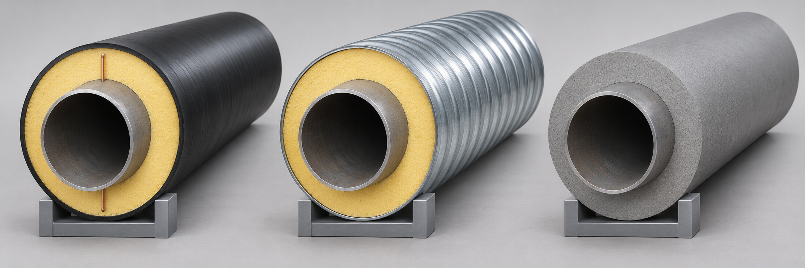

Выбор системы
ППУ, ППМ и ВУС не заменяют друг друга по одному диаметру
ППУ и ППМ решают задачу теплоизоляции разными конструкциями. ВУС/УС — это антикоррозионная защита стали, а не теплоизоляция.

Как читать ППУ-изделие
Изделие нужно видеть послойно: стальная несущая труба, жёсткий пенополиуретан, проводники СОДК и наружная оболочка. Полиэтиленовая оболочка и оцинкованная спиральная оболочка применяются в разных схемах прокладки; конкретный вариант задаёт проект.
Базовая логика сопоставления ППУ: вид изделия → наружный диаметр стальной трубы → толщина стенки → тип изоляции 1 или 2 → ГОСТ стальной трубы → длина. Иная длина не скрывается, а показывается как отклонение.
Сравнение без ложной взаимозаменяемости
| ППУ-ПЭ / ППУ-ОЦ | ППМ | ВУС/УС | |
|---|---|---|---|
| Функция | Теплоизоляция с наружной оболочкой. | Монолитная теплоизоляционная система. | Защита стали от коррозии. |
| Наружный слой | ПЭ-оболочка или ОЦ-оболочка. | Конструкция ППМ без отдельной защитной трубы как у ППУ-ПЭ. | Тонкое полимерное покрытие. |
| Стык | Своя система КЗС и СОДК. | Стык по технологии ППМ. | Защита зоны сварки совместимым материалом/лентой. |
| Что нельзя делать | Подбирать по DN без наружного диаметра, называть антикоррозию теплоизоляцией, менять проектную систему без согласования. | ||
Карточка запроса
- Вид изделия: труба, отвод, тройник, переход, опора и т. д.
- Наружный диаметр стали, толщина стенки, марка/ГОСТ трубы.
- Вид и тип изоляции, наружный диаметр оболочки.
- Длина, количество, схема фасонной детали.
- Среда, температура, давление, тип прокладки, наличие проекта.
DN не равен наружному диаметру. Перевод допустим только по зафиксированному нормативному соответствию; неизвестное значение не угадывается.
Сверять с разделом ППУ ТИК, разделом ППМ и карточкой конкретного изделия.